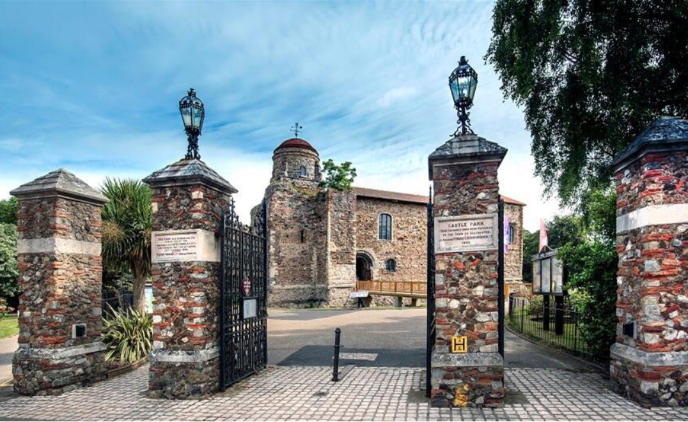
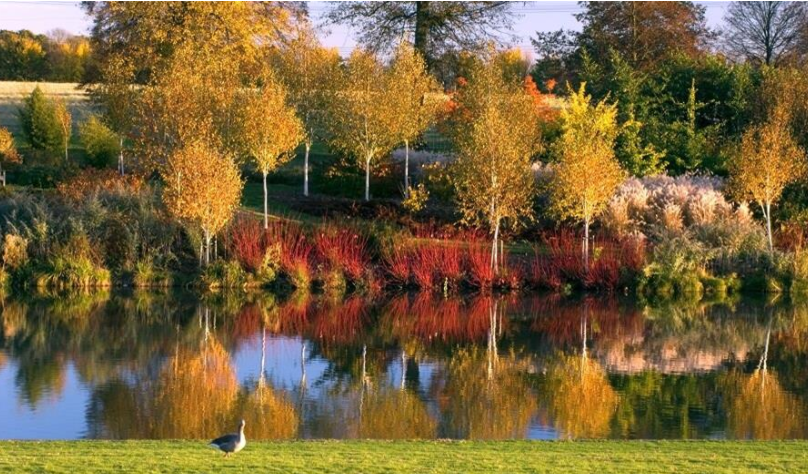

Travel information
There is good access to
Colchester from all parts of the UK via the A12, M25 and A14. Colchester is linked to
London by the A12.
Stansted Airport (STN) is
just 50 minutes away from Colchester by road via A12/A120. Regular Coach transfer
services are available between Marks Tey Train Station and the airport.
London Heathrow Airport (LHR) is around 1 hour and 45 minutes away from Colchester by
road via M25 and A12. You may travel to London Liverpool Street Station via London
Underground, and then take train from there to Colchester.
London Gatwick Airport (LGW) is around 2 hour and 25 minutes away from Colchester by
road via M25 and A12. You may travel to London Liverpool Street Station via Thameslink
and London Underground, and then take train from there to Colchester.
Colchester is on the
London Liverpool St to Norwich line, around an hour's travel. Colchester has three
stations: Colchester (also known as Colchester North, COL) is the mainline station
around a 20-minute walk from the Town Centre, Colchester Town (CET) is a branch line
located in the Town Centre, and Hythe (HYH) is the closest station to the University.
There are regular National
Express coach services linking Colchester Bus Station to and from London Victoria Coach
Station and Stansted Airport.
Accommodation
Situated on the River Colne, Colchester-the oldest
recorded town in Britain, is Britain's First City, and
former capital of Roman Britain. Its rich history dates back over 2000 years and is a
member of the Most Ancient European Towns Network.
- 1. Wivenhoe House Hotel, Wivenhoe Park, Colchester, CO4 3SQ
- Note: 4-star hotel, on campus, 24 bedrooms
- https://www.wivenhoehouse.co.uk/
- 2. Best Western The Rose & Crown Hotel, East Street, Colchester, CO1 2TZ
- Note: 3-star hotel, 14th-century coaching inn, near Greenstead area, oldest recorded hotel in Colchester
- https://www.bestwestern.co.uk/hotels/best-western-the-rose-crown-hotel-83744
- 3. Brook Red Lion Hotel, High Street, Colchester, CO1 1DJ
- Note: 3-star hotel, Town center, listed building, airport shuttle at extra cost
- https://www.red-lion-hotel.co.uk/en-gb
- 4. GreyFriars hotel, High Street, Colchester, CO1 1UG
- Note: 4-star hotel, Town center, 26 bedrooms
- http://greyfriarscolchester.co.uk/
- 5. The George Hotel, 116 High Street, Colchester, CO1 1TD
- Note: 3-star hotel, Town center, 500-year-old hotel
- https://www.thegeorgehotelcolchester.co.uk/
- 6. The North Hill Hotel, 51 North Hill, Colchester, CO1 1PY
- Note: 3-star hotel, near Town center & Colchester (north) train station, 24 bedrooms
- http://northhillhotel.com/
- 7. Globe Hotel, 71 North Station Road, Colchester, CO1 1RQ
- Note: 3-star hotel, near Colchester (north) train station, 12 bedrooms
- https://www.globehotelcolchester.co.uk/

- 8. Holiday Inn Colchester, Abbotts Lane - Eight Ash Green, Colchester, CO6 3QL
- Note: 4-star hotel, Stanway area/A12, 110 bedrooms
- https://www.holidayinn.com/hotels/gb/en/colchester/stnco/hoteldetail
Things to do at Colchester
History & Landmarks
- 1. Colchester Castle Museum + Hollytrees Museum + Duncan's Gate, Castle Park, Colchester CO1 1TJ
- https://colchester.cimuseums.org.uk/
- 
- 2. St. Botolph's Priory, Priory Street, Colchester C02 7EE
- http://www.english-heritage.org.uk/visit/places/colchester-st-botolphs-priory

- 3. Roman Circus Centre, Roman Circus Walk, Colchester CO2 7GZ
- https://www.romancircus.co.uk/
- 4. Firstsite Contemporary Art Gallery, Lewis Gardens, High Street, Colchester, Essex, CO1 1JH
- 5. Dutch Quarter, High Street, Colchester, Essex, CO1 1PJ
Nature & Parks
- 1. Colchester Zoo, Maldon Road Stanway, Colchester, Colchester CO3 0SL
- https://www.colchester-zoo.com/
- 2. Marks Hall Estate, Marks Hall Road, Colchester CO6 1TG
- https://www.markshall.org.uk/
- 
- 3. Green Island Gardens, Green Island Park Road, Ardleigh, Colchester CO7 7SP
- https://www.greenislandgardens.co.uk/

- 4. High Woods Country Park, Visitors Centre Turner Road, Colchester CO4 5JR
- https://www.colchester.gov.uk/country-park/
- 5. Beth Chatto's Plants & Gardens, Elmstead Market Clacton Road, Colchester CO7 7DB
- https://www.bethchatto.co.uk/